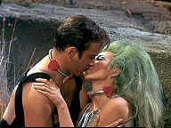
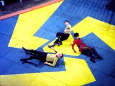
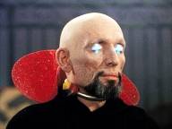
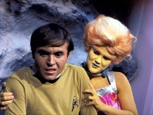
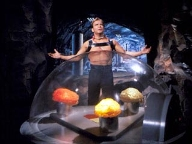

|
MANCHETE
DO EPISÓDIO
Segmento
abusa da reutilização de temas a clichês, com resultado medíocre
Episódio
anterior | Próximo episódio Sinopse:
Data Estelar:
3211.7.
A USS Enterprise está em
uma missão de inspeção de rotina de uma estação automática no planeta
Gamma II. O Capitão Kir, Uhura, e Chekov se preparam para ser transportados a
instalação, quando desaparecem antes do transporte ser ativado. Eles aparecem
em uma praça parecida com uma arena, em planeta desconhecido, sendo atacados
logo após sua chegada por um grupo de criaturas humanóides de espécies
diferentes.
O grupo tenta usar os fasers, mas estes não funcionam, forçando a um combate
corpo a corpo, onde os oficiais da Enterprise acabam sendo subjugados. Um quarto
humanóide então aparece, cumprimentando Kirk e seus oficiais por sua
performance. O ser identifica-se com Galt, Mestre dos “Servos” de Triskelion,
a serviço dos “produtores”, os verdadeiros mestres de Triskelion, que
permanecem desconhecidos para Kirk e seu grupo.
Tais seres parecem ter como único objetivo apostar em combates realizados pelos
Servos na arena dos jogos, jogos dos quais Kirk, Uhura e Chekov terão agora que
participar pelo resto de suas vidas, como se fossem gladiadores, para
entretenimento dos “Provedores”. Para garantir a submissão dos cativos, o
grupo recebe um tipo de colar preso ao pescoço que infringe severa dor a quem o
usa, em caso de desobediência, sendo em seguida levados para suas celas.
Neste meio tempo a Enterprise procura pelos membros desaparecidos ainda em Gamma
II, obviamente sem sucesso. Os sensores não captam nenhum sinal dos
tripulantes, e a tripulação começa a procurar em outros planetas habitáveis
do sistema.
De volta a Triskelion, Kirk e seu grupo fazem planos para escapar, mas o poder
de Galt sobre eles, graças aos colares, é virtualmente insuperável, colares
que eles não estão em condições de remover. Os três são introduzidos aos
seus servos instrutores, que irão servir a suas necessidades básicas, ao mesmo
tempo em que os preparam para os combates na arena.

Chekov é apresentado a Tamoon, uma mulher enorme, com características de um
tigre. Para Uhura, é escolhido Lars, um humanóide macho, corpulento e de
semblante ameaçador. Para Kirk é escolhida Shahna, uma linda e tímida mulher
de cabelo verde exoticamente vestida. Shahna inicialmente parece ser tão dura
com Kirk quanto os outros instrutores são com seus servos, mas aos poucos ela
vai se afeiçoando ao capitão.
Shahna explica a Kirk que como sua serva instrutora, ela irá treiná-lo até
que esteja pronto para a arena, quando serão então “comprados” pelo
“Provedor” que fizer a maior oferta por ele. Kirk tenta extrair mais informações
de Shahna, mas esta não coopera muito, inicialmente, então o capitão muda a
estratégia, para uma abordagem mais pessoal, mas é interrompido pelo que
Shahna diz ser um intervalo para exercício.
A bordo da Enterprise, após uma busca infrutífera em Gamma II, e no sistema
Estelar ao redor, Spock resolve seguir a única pista a sua mão, uma inesperada
leitura de partículas ionizadas que poderia ser compatível com algum tipo de
feixe de transporte. Sob os protestos de McCoy e Scott, o primeiro oficial
ordena um curso que levara a Enterprise a doze anos luz da atual posição da
Enterprise, no sistema estelar trinário M24, origem do fenômeno, esperando
encontra lá seus companheiros desaparecidos.
Em Triskelion, Kirk e seus oficiais estão realizando seu treinamento com seus
servos instrutores quando Galt aparece trazendo com ele um servo que deverá ser
castigado. Galt ordena que todos no grupo usem o homem como “alvo de
pratica”, o que significa que todos deverão desferir golpes contra o oponente
indefeso. Uhura é chamada a iniciar a punição, se recusa, no que é seguida
por Kirk.
Eles são punidos com uma pequena dose do “colar de obediência”, mas mesmo
assim Galt ela ordena uma punição extra em Uhura como forma de dar ao grupo
uma lição. Kirk se interpõe, exigindo ver os criadores, o que é negado, e
Galt repassa para ele a punição que Uhura sofreria.
Kirk é amarrado, e é transformado em “alvo de pratica” e Galt não tem
duvida que Kirk vá morrer no processo. Kloog, um gigante mal encarado usa um
chicote contra Kirk, mas este, mesmo amarrado, consegue se defender e imobilizar
o gigante, após um pequeno descanso permitido por Galt, durante o qual Shahna dá
a Kirk algum tipo de estimulante.
A luta então é interrompida ao som da voz de um dos produtores e começam a se
ouvir lances pelos membros da Federação, até que a maior oferta vence. Kirk e
seus homens são vendidos ao produtor 1, recebem “a marca” (os seus colares
passam a ter a cor vermelha) de seu “dono”, sobre os protestos inúteis de
Kirk. Galt informa a Kirk e seu grupo que agora que estes são servos marcados,
qualquer desobediência será punida com a morte.
Durante o treino, Kirk encontra tempo para ficar a sós com Shahna, e tenta
descobrir informações sobre os provedores, mas esta ainda se mostra reticente.
Kirk tenta “amaciá-la”, falando sobre outros planetas que ele visitou a
sobre o conceito de liberdade. A estratégia parece funcionar, mas causa a
imediata reação dos “Provedores” através do acionamento do seu colar de
obediência.
Kirk protesta e pede para seu punido no lugar dela, sem sucesso, o que causa
surpresa e admiração na alienígena. Após um beijo entre os dois, Galt
aparece, e manda os dois voltarem para as celas, enquanto diz a Kirk este não
será punido por ter divertido os “Provedores”.
Na cela, Shahna expressa os seus sentimentos a respeito da tentativa de Kirk
interceder em seu favor, arriscando com isto atrais a irá dos “Provedores”
contra ele. Kirk tira vantagem deste momento, e acerta um direto em Shahna, que
cai desacordada. Ele pega as chaves da cela e liberta Chekov e Uhura, e tentam
novamente a fuga, que é interrompida pela aparição de Galt e mais uma vez
pelo uso dos colares.
A Enterprise finalmente chega ao planeta, e Spock consegue localizar os
desaparecidos na superfície. O Vulcano e McCoy tentam descer a superfície para
procurar por seus companheiros, mas antes que eles consigam, a nave perde toda a
energia, fato causado pelos “Produtores”. Tal ação é notada por Kirk e
seus oficiais, que subitamente passar a ouvir tudo o que acontece na ponte da
Enterprise, e vice versa.

Kirk mais uma vez pede para ver os “Provedores”, anunciando que fará uma
proposta para que eles não poderão recusar. Após algumas negativas, Kirk
consegue finalmente seu intento. Ele é transportado para o interior do planeta,
numa câmara abaixo da superfície, onde está todo o maquinário que faz todo o
equipamento de Triskelion funcionar. Lá ele encontra uma mesa cercada por um
domo onde estão três cérebros sem corpo, brilhando. Os “Produtores”
Estes dizem ser antigas formas de vida humanóides, que evoluíram para
criaturas de puro intelecto, e que agora passam seu tempo apostando entre si em
seres que eles julgam inferiores e que são trazidos para lutar na arena. Os
“Produtores” estão dispostos a manter os humanos ali, e planejam destruir a
Enterprise.
Kirk convence a estes a aceitar uma aposta de tudo ou nada. Eles enfrentarão
servos escolhidos pelos produtores na Arena, e se vencerem, todos, inclusive os
servos, ganharão a liberdade, cabendo aos provedores ensinar os servos a se
auto governarem. Se Perderem a tripulação da Enterprise ficará sem resistência,
oferecendo entretenimento aos “Produtores”. Estes aceitam a aposta, mas sob
a condição de que Kirk lute sozinho contra três adversários. O capitão não
tem escolha e aceita a condição.
Kirk é enviado de volta a Arena, Galt informa que a luta será até a morte, e
o combate começa, sendo assistido também pela tripulação da ponte da
Enterprise através da tela. Kirk elimina dois adversários, mas apenas fere o
terceiro. De acordo com as regras estabelecidas, o lutador ferido é substituído
por Shahna. Kirk Reluta, mas consegue subjugar Shahna, sem matá-la. Apesar
disto os “Produtores” aceitam a vitória de Kirk, e honram o acordo.
Shahna pede que Kirk a leve, mas este diz não poder fazê-lo, e pede que ela
fique e aprenda. Kirk, Uhura e Chekov voltam a Enterprise, deixando para trás
uma ex serva derramando lagrimas por Kirk.
Comentários:
Começando pela parte boa,
podemos dizer que este é um segmento é extremamente bem intencionado. Existe
em “The Gamesters of Triskelion” uma proposta panfletária, ao
criticar o sentimento de superioridade de um determinado grupo, representado
pelos “Provedores”, sobre outro, representado pelos “servos”, recriminar
a escravidão, defender o direito a autodeterminação e por extensão, os
direitos civis. O segmento bate de frente com o barril de pólvora que era a
questão racial nos Estados Unidos da América, nos anos sessenta.
Notem que a certa altura do episodio, Galt apresenta um servo negro para ser
castigado, e pede justo a Uhura que seja a primeira a aplicar o castigo. Uhura
é claro se recusa, mesmo com a vida ameaçada. Uma cena simples, mas
significativa, dada à situação política da época, onde a maior reverencia
era o reverendo Martin Luther King.

O episodio, ao apresentar seres de diversas raças da galáxia escravizados, e
tentar discutir as origens e implicações de tal situação, afirma a mensagem
“Todos são iguais”, de King, que entendia que a luta dos povos do Terceiro
Mundo assemelhava-se a dos negros americanos contra a discriminação e o
preconceito, e a atitude de Uhura reafirma a filosofia de não violência do mártir,
que lutava contra o racismo, mas se opunha a grupos como os Panteras Negras,
influenciados por Malcon X, que postulavam a organização de milícias
populares nos bairros negros como forma de resistência ao poder dos brancos.
Se tivermos em mente que este episodio foi ao ar em janeiro de 1968, e que
apenas três meses depois Luther King foi assassinado em Memphis, Tennessee, é
possível perceber um pouco da contexto perigoso com que Jornada tentava lidar a
época. Mas como se diz, de boas intenções o inferno anda cheio, e não há
boa intenção que consiga salvar este segmento da monotonia que tem problemas
demais
Tirando a intenção, muito pouco se salva deste segmento da Série Clássica,
que não passa de uma colagem de alguns temas já apresentados e discutidos ao
longo de sua existência, até aqui. Os “Provedores” reacendem a mensagem
que avisa sobre os perigos da mecanização do ser humano, (“What Are
Little Girls Made Of?”), ou do controle de seres vivos sencientes (humanos
ou alienígenas) por computadores, (“The Return of the Archons” e “The
Apple”).
E de novo, temos a tripulação da Enterprise precisando lutar pela sobrevivência
como gladiadores, (“Arena" e "Bread and Circuses”).
Os exemplos anteriores são os mais óbvios, embora o fã atento possa encontrar
por outras referencias, se quiser se dar ao trabalho de procurar.
Junte-se a isto uma tediosa seqüência de combates corpo a corpo de Kirk, o
tradicional apelo do capitão ao seu charme de oficial da Frota Estelar para
conseguir se livrar da encrenca da semana, e a indefectível aplicação da sua
lógica circular para convencer os provedores a aceitar a proposta final, que
acaba por libertar a todos. No final, o todo é muito menor do que a soma das
partes, e não podia deixar de ser diferente, com tão pouca originalidade em
foco.

Se a trama não desperta atenção, os diálogos acompanham a falta de
criatividade. O curso relâmpago sobre o “Federation Way of Life”,
ministrado por Kirk a incauta Shahna exala chatice e previsibilidade, e deixa
uma questão: Como nosso bravo capitão salvaria o dia se, ao invés de Shahna,
ele tivesse ficado com Tamoon !? Seria no mínimo, interessante. Mas como Kirk
é um cara de sorte, caiu na mão da Barbarella.
Os adversários dos oficiais da Federação também são pífios. Um ogro lerdo,
outro lutador com a agilidade de um Frankstein de filme “B” e é claro, a
“doce” Tamoon. Alguém realmente acreditaria que este trio são lutadores
que sobrevivem na arena dias, após dia ? Difícil, por isto jamais temos a
sensação de os membros da Federação estão mesmo em perigo, apenas, no
Maximo, em uma enrascada.
O material apresentado a todos é pobre demais para permitir que alguma atuação
individual de algum brilho ao segmento. Podemos citar as cenas a bordo da
Enterprise entre McCoy, Spock e Scott como alguns dos momentos capazes de criar
alguma empatia com o espectador, principalmente quando Spock chama Scott e
“Magro” para uma conversa de “pé de orelha”, mostrando que o Vulcano
aprendeu alguma coisa dos acontecimentos de Galileo 7. Mesmo assim, é preciso
alguma dose de boa vontade, pois a insistência de McCoy em questionar Spock sem
nenhum argumento valido excede o credito do bom doutor.

Os “Provedores” também são deveras decepcionantes. A escolha da dos cérebros
para representar os seres dominantes de Triskelion é uma alegoria ao perigo de
que o uso do intelecto em detrimento das emoções humanas, mas uma alegoria
muito mal realizada. No final, Kirk convence-os a apostar tudo ou nada, e ao
vencer aposta, ele vai embora, deixando a nos, fãs incautos a atarefa de
acreditar que os “Provedores”, Jogadores compulsivos, e seres que sempre
trataram os “servos” como inferiores, vão simplesmente cumprir sua promessa
e ensinar a estes um modo de vida que os próprios provedores não conhecem.
Haja suspensão de descrença.
Uma menção honrosa deve ser feita à cena final de Shanah, muito bonita, e
comovente, mas é só. As coreografias manjadíssimas, os atuações fracas de
todos os atores, alguns pelo pobre material apresentado, outros por que são
ruins mesmo, a falta de criatividade, e a conclusão simplória da trama, fazem
deste um dos piores segmentos da segunda temporada da Serie Clássica.
Citações:
Kirk:
"All your people must learn before you can reach for the stars.”
("Todas as pessoas devem aprender antes de alcançar as estrelas".) Kirk: "A
species that enslaves other beings is hardly superior, mentally or otherwise."
("Uma especie que escraviza outros seres dificilmente é superior,
mentalmente ou de qualquer outra maneira.") Kirk: "We're
free people. We belong to no one."
("Nos somos pessoas livres. Não pertencemos a ninguém.") Kirk: "My
people pride themselves on being the greatest, most successful gamblers in the
universe. We compete for everything: power, fame, women. Everything we desire.
And it is our nature to win! For proof I offer you our exploration of this
galaxy."
("Meu povo orgulha-se de serem os melhores e maiores jogadores do
universo. Nos competimos por tudo: poder, fama, mulheres. Tudo o que desejamos.
É nossa natureza é vencer. Como prova, eu ofereço a exploração desta galáxia.") Kirk: "It's
the custom of my people to help one another when we're in trouble."
("É costume do meu povo ajdudar outras pessoas quando elas estão em
problemas.") McCoy: "Hope!
I always thought that was a human failing, Mr. Spock?"
("Esperança! Eu sempre pensei que está era uma fraqueza humana,
senhor Spock"?) Spock: "True,
Doctor. Constant exposure does result in a certain degree of contamination."
("Verdade, Doutor. Constante exposição resulta em um certo grau de
contaminação".) Trivia:  O Titulo original de deste episodio seria "The Gamesters of Pentathalon".
O Titulo original de deste episodio seria "The Gamesters of Pentathalon".
Chekov teve que tomar o lugar de Sulu neste episodio. George Takei,
inicialmente escalado estava ocupado com as filmagens de “Os Boinas Verdes”
(The Green Berets).
O Globo de Acrílico usado para exibir o cérebro dos “Produtores” foi
usado como o topo da nave de Lazarus, em “The Alternative Factor”.
Dick Crockett (O servo Andoriano) foi o coordenador de dubles na Serie Clássica.
Ele atuou frequentemente como duble de William Shatner. Ele também atuou como
Klingon no episodio "The Trouble with Tribbles". O ultimo
trabalho de Crockett foi como coordenador de Dubles no filme “10”. Ele
morreu durante a produção do filme.
A Voz de Robert Johnson, um dos provedores, foi uma das mais famosas vozes da
América por muitos anos. Era dele a voz que gravada na fita que dava ao agente
Jim Phelps sua próxima missão, em Missão Impossível (Mission: Impossible).
O fundo pintado utilizado para representar os equipamentos dos provedores sob a
superfície era o mesmo da estação de mineração Janus VI, em "The
Devil in the Dark".
Margaret Armen escreveu também: "The Paradise Syndrome", "The
Cloud Minders", para a Serie Clássica, e "The Lorelei
Signal", "The Ambergis Element" para a Serie
Animada e "Savage Syndrome", para o projeto Star Trek
Fase II.
Joseph Ruskin (Galt) retornaria a Jornada nas Estrelas anos depois em
varias participações: Em Deep Space Nine ele esteve presente em "The
House of Quark", "Looking for par'Mach in All the Wrong Places",
como Tumek, e "Improbable Cause", como o Informante de Odo . Em
Voyager no episodio "Gravity" como um Mestre Vulcano, em
Enterprise - "Broken Bow" como um médico Suliban e em Insurreição,
como Oficial son'a. Ele, Clint Howard e Jack Donner, são os únicos três
atores que apareceram tanto na série original como em Enterprise.
Angelique Pettyjohn fez uma ponta no seriado Batman, em 1967. O nome do
episodio: "A Piece of the Action". Ela também teve uma pequena
participação em “Clambake” - O Barco do amor- (1967) com Elvis Presley, e
em “Get Smart” – Agente 86 (1967), nos episódios "Pussycats Galore"
e "Smart Fit the Battle of Jericho", como o agente 38, Charlie Watkins.
Infelizmente, sua carreira nunca decolou, levando a atriz a participar de filmes
pornográficos, hora como Ashley St. John ou Heaven St. John. Ela teve uma curta
carreira como stripper em Las Vegas, no inicio dos anos 80, e durante anos foi
figurinha carimbada nas convenções de Jornada nas Estrelas. Angelique
Pettyjohn morreu aos 48 anos, em 14 de fevereiro de 1992, vitima de câncer.
Ficha
técnica:
Escrito por Margaret
Armen
Direção de Gene Nelson
Exibido em 5 de janeiro de 1968
Produção: 46
Elenco:
William Shatner como James Tiberius
Kirk
Leonard Nimoy como Spock
DeForest Kelley
como Leonard H. McCoy
Nichelle Nichols como Uhura
George
Takei como Hikaru Sulu
Elenco convidado:
Victoria George como
Jana Haines
Joseph Ruskin como Galt
Angelique Pettyjohn como Shahna
Jane Ross como Tamoon
Mickey Morton como Kloog
Steve Sandor como Lars
Dick Crockett como servo Andoriano
Eddie Paskey como Leslie (não creditado)
William Blackburn como Hadley (não creditado)
Roger Holloway como Roger Lemli (não creditado)
Frank da Vinci como Brent (não creditado)
Bart LaRue como voz do Produtor 1
Walker Edmiston como voz do Produtor 2
Robert Johnson como voz do Produtor 3
Episódio anterior |
Próximo episódio
|